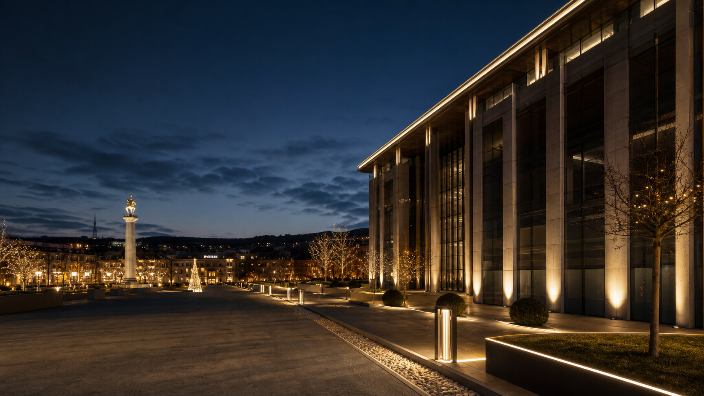

Городские пространства
Площади, парки, улицы, сезонное оформление и инфраструктурный свет.

Georgia / Premium engineering service
Архитектурное освещение, праздничные инсталляции, электромонтаж, безопасность, климат и управление светом под ключ.
От концепции и расчётов до монтажа, запуска и сервиса.
Премиальный уровень исполнения без лишней переплаты.
Свет, электрика и инженерные системы в единой ответственности.
TPI LUX создаётся как самостоятельный бренд для Грузии: люксовый уровень сервиса, аккуратная коммуникация, понятная ответственность и решения, рассчитанные на реальную эксплуатацию.
Мы работаем с городскими пространствами, коммерческими объектами, общественными территориями и частными проектами, где важны внешний вид, надёжность и сроки.
Каждое направление открывается как отдельная страница с составом работ, решениями и заявкой.
Концепция, расчёты, поставка, монтаж и настройка фасадного и паркового света.
Подробнее 02Уличные и интерьерные гирлянды, 2D/3D фигуры, динамические сценарии и сервис.
Подробнее 03Городские ёлки, световые арки, тоннели, фотозоны и сезонное обслуживание.
Подробнее 04Кабельные линии, щитовое оборудование, питание освещения и инженерных систем.
Подробнее 05DMX, контроллеры, централизованное управление, динамические световые сцены.
Подробнее 06Видеонаблюдение, контроль доступа, СКС, интеграция и техническое обслуживание.
Подробнее 07Вентиляция, кондиционирование, VRF/VRV, фанкойлы, запуск и сервис систем.
Подробнее 08Игровые комплексы, парковые элементы, производство, монтаж и обслуживание.
ПодробнееФормат работы должен быть понятен заказчику до старта проекта.
Анализ объекта, световая или инженерная концепция, расчёты и документация.
Изготовление конструкций и подготовка оборудования под задачу.
Комплектация проекта, логистика, проверка качества перед монтажом.
Установка, подключение, соблюдение требований безопасности и сроков.
Тестирование, настройка режимов, программирование сценариев.
Обслуживание, диагностика, сезонные работы и поддержка эксплуатации.
После отбора фотографий этот блок станет витриной реальных кейсов.
Площади, парки, улицы, сезонное оформление и инфраструктурный свет.
Фасады, входные группы, торговые пространства, рестораны и отели.
Ландшафтный свет, праздничное оформление, инженерные системы для домов.
Подготовим техническое решение, варианты реализации и коммерческое предложение под объект в Грузии.